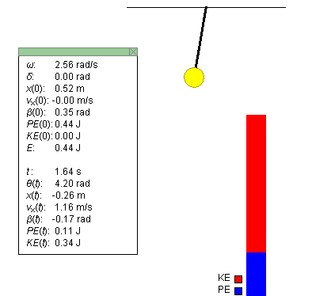
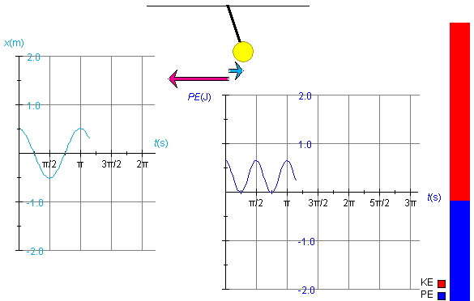
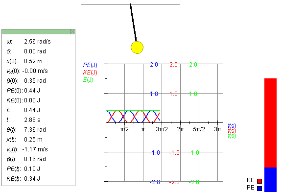
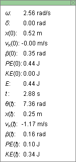

Instructions
This page is designed to get you started using the applet. The applet should be open. The step-by-step instructions on this page are to be done in the applet. You may need to toggle back and forth between instructions and applet if your screen space is limited.
 Potential and Kinetic Energy
Changes
Potential and Kinetic Energy
Changes
 Graphs of Kinetic, Potential, and
Mechanical Energy vs. Time
Graphs of Kinetic, Potential, and
Mechanical Energy vs. Time
 Dependence of the Potential
Energy on System Parameters
Dependence of the Potential
Energy on System Parameters
Note. The applet simulates an approximation to a simple pendulum's motion called the SHM approximation. See Assumptions.
Exercise 1. RESET  the applet.
the applet.
Set the amplitude to A = 0.52 m, and keep the mass,
length, and magnitude of gravitational acceleration at their
default values of L = 1.50 m, m = 0.50 kg, and
g = 9.8 m/s2, respectively. Display the Data
box by selecting the Data toggle button  .
.
Start the motion from its default position, which has the pendulum bob in its most deflected position to the right, such that the phase d is equal to 0. PLAY the motion, and PAUSE it at or near t = 1.64 s. The pendulum, energy bar, and Data box should look as in Figure 1 below.

Figure 1
The ratio of the kinetic energy portion (red) and potential energy portion (blue) of the energy bar should correspond to the ratio of these energies as displayed in the Data box. In the case shown in Figure 1, this ratio has the value KE/PE = 0.34/0.11, which is close to 3/1.
Exercise 2. Continuing from Exercise 1, REWIND the applet. The pendulum should be back in its right-most position. Drag the pendulum bob from the right to the left of its range of motion, and observe the variation in the potential energy.
You should find that the potential energy goes from its maximum value when the pendulum is at the far right, to its minimum value when the pendulum is at its equilibrium position (bottom of the swing), back to its maximum value when the pendulum is at the far left.

Exercise 1. RESET the applet. Start the motion at t = 0 with the pendulum in its right-most (default) position. Display both the position vs. time and potential energy vs. time graphs and arrange them as in Figure 2 below. Set the amplitude to A = 0.52 m and the pendulum length to L = 1.00 m, and keep the mass at m = 0.50 kg and the magnitude of the acceleration due to gravity at g = 9.8 m/s2.
PLAY the motion until the oscillation has gone through one complete cycle and a little bit beyond, so that the pendulum has just started moving left again. The two graphs should look similar to what is shown in Figure 2. Ignore the position and velocity vectors for the time being.
To display the graphs, click on the Graphs toggle button  and check the appropriate checkboxes on the graph
panel that opens up. For details on using the Graph panel,
please see Point 4 in Help.
and check the appropriate checkboxes on the graph
panel that opens up. For details on using the Graph panel,
please see Point 4 in Help.

Figure 2
x is the horizontal coordinate of the center of the pendulum bob. The x-axis increases to the right, with x = 0 at the pendulum bob's equilibrium position. In the SHM approximation underlying the applet simulation, the potential energy PE is proportional to x2, specifically,
PE = (1/2)(mg/L)x2 .
Therefore, as x decreases, reaches 0, and decreases further to negative values, PE decreases, reaches 0, and increases again to positive values. As a result, the frequency of oscillations of the potential energy PE is twice that of the frequency of the displacement x.
Observe that on the horizontal axis of the graphs the time t is plotted in seconds (s). Don't be mislead by the unusual divisions labeled π/2, π, etc. These are in seconds, not in radians. Thus, the point where the x vs. t graph crosses the t-axis for the first time is at a time close to t = π/4 s = 0.785 s. The reason for dividing the time axis in this way is that the expression for the period T of the oscillating spring is
T = 2π (L/g).
(L/g).
The presence of π in this expression makes it natural to divide the time axis into segments that are multiples of π.
Also observe that the maximum x-value in the x vs. t graph is equal to the amplitude, A = 0.52 m, and that the maximum value of PE is related to that of A according to the expression for PE given above,
PE = (1/2)m(g/L)A2 = (1/2)×0.50×9.8/1.00×0.522 = 0.66 J .
Exercise 2. Continuing from Exercise 1, hide the position vs. time graph and display the kinetic energy vs. time graph instead, in addition to the potential energy vs. time graph. Arrange the graphs so that they don't overlap. To do so, move one graph at a time by selecting only that graph's movability checkbox in the Graph Panel.
REWIND the applet to put the pendulum bob back to its right-most position, and click Reset in the Graph panel (not the main Reset button) to clear the two graphs.
PLAY the motion again through a little bit beyond one cycle.
You should again obtain the PE vs. t graph shown in Figure 2 above. The KE vs. t should look like the "inverse" of the PE vs. t graph, i.e., KE should be increasing when PE is decreasing and vice versa.
Exercise 3. Continuing from Exercise 2, display the position and velocity-at-origin vectors of the oscillating pendulum bob by checking the relevant checkboxes in the vector panel. The vectors represented by cyan and magenta arrows, respectively. These vectors are shown in Figure 2 above.
The potential energy is proportional to the square of the length of the position vector and the kinetic energy is proportional to the square of the length of the velocity vector.
Select the Zoom button  . The velocity vector and the two graphs
should decrease by a factor 2 in length or height, respectively,
and the energy bar by a factor of 4. Then deselect the button
again to restore the original heights.
. The velocity vector and the two graphs
should decrease by a factor 2 in length or height, respectively,
and the energy bar by a factor of 4. Then deselect the button
again to restore the original heights.
Exercise 4. Continuing from Exercise 3, REWIND the applet, and Reset the two graphs in the Graph panel. Change the mass from m = 0.50 kg to m = 1.00 kg. Ignore the fact that the energy bar will probably exceed the height of your applet window in this case. PLAY the motion again through one cycle and a bit.
You should be able to observe that the kinetic and potential energy graphs have doubled in height compared to those in Exercise 3, but that the velocity vector has the same amplitude as before.
The reason for the doubling of the amplitude of the PE graph is that PE is proportional to the mass, according to the equation quoted earlier. Since the total mechanical energy E is equal to the potential energy at the start when KE = 0, the total energy is doubled as well when the mass is doubled. And so is the kinetic energy, because KE = E - PE.
If both KE and m are doubled, the speed must stay unchanged, in accordance with the equation
KE = (m/2)v2 .
Exercise 5. RESET the applet, and change the value of the amplitude from A = 0.17 m to A = 0.52 m. Display all three energy graphs, for potential, kinetic, and mechanical energy. Keep all three graphs superimposed on each other in one place.
PLAY the motion through one cycle and a bit. You should obtain graphs like those in Figure 3 below.

Figure 3
The three graphs may have to be moved a bit to not make them overlap with the energy bar. To move them, check the movability icon for all three graphs in the Graph panel and then drag the graphs. They will move together as one unit.
Observe that the green graph for the mechanical energy E is a straight horizontal line at the tops of the KE and PE graphs. Also observe that the graphs have gone through two cycles and a bit, while the motion itself has gone through one cycle and a bit.
The applet lets you vary the values of the following four parameters: amplitude A, pendulum length L, pendulum bob mass m, and magnitude g of the acceleration due to gravity. (In reality, you would have to go to the moon or to another planet to be able to study pendulum motion under conditions where g is not equal to 9.8 m/s2.)
In the following Exercises you will be asked to examine the dependence of the maximum value of the potential energy on these four variables. By "maximum value of the potential energy" the following is meant. The potential energy is a function of time during the pendulum's oscillation and takes on its maximum value both at the far right and far left positions of the pendulum bob. The Exercises ask you to investigate if this maximum value depends on A, L, m, and g. In this connection, remember the expression for the potential energy quoted above,
PE = (1/2)m(g/L)x2.
Exercise 1 - Amplitude
RESET the applet, and display the Data box by selecting the Data
button .
Make a drawing of the potential energy bar and record the value of the potential energy as given in the Data box.
Change from A = 0.17 m to A = 0.52 m. Again, draw the potential energy column, next to the one already drawn, and record the value of the potential energy shown in the Data box. Are the results consistent with the equation for the potential energy above? In comparing the data with the equation, keep in mind that there is the possibility of a significant amount of round-off error because so few significant digits of the potential energy are displayed in the Data box.
Exercise 2 - Pendulum Length
Continuing from Exercise 1, change the length of the pendulum from L = 1.50 m to L = 3.00 m. Draw the new potential energy bar next to the one already drawn, and record the value of the potential energy as shown in the Data box.
Are the changes in the height of the potential energy bar and in the value of the potential energy from the Data box consistent with the equation for the potential energy?
Exercise 3 - Mass
Continuing from Exercise 2, change the mass of the pendulum bob from m = 0.50 kg to m = 1.00 kg. Draw the new potential energy bar next to the ones already drawn, and record the value of the potential energy as shown in the Data box.
Are the changes in the height of the potential energy bar and in the value of the potential energy from the Data box consistent with the equation for the potential energy?
Exercise 4 - Acceleration Due To Gravity
Continuing from Exercise 3, change the magnitude of the acceleration due to gravity from g = 9.8 m/s2 to g = 5.0 m/s2. Draw the new potential energy bar next to the ones already drawn, and record the value of the potential energy as shown in the Data box.
Are the changes in the height of the potential energy bar and in the value of the potential energy from the Data box consistent with the equation for the potential energy?
Exercise 1. RESET the applet. Display the Data box by
selecting the Data toggle button . Click on
the Data box, and drag it to a convenient location in the
applet window.
As an example, Figure 4 below reproduces the Data box from Figure 3 above. To reproduce the values shown in Figures 3 and 4, you must set the amplitude to A = .52 m and PLAY the applet to time t = 2.88 s.

Figure 4
The top half of the Data box shows the constants and initial conditions for the motion, the bottom half the values of the variables at time t. The mechanical energy E is shown only in the top portion because it is a constant of the motion. For a detailed explanation of the items in the Data box, please see Point 3 in Help.